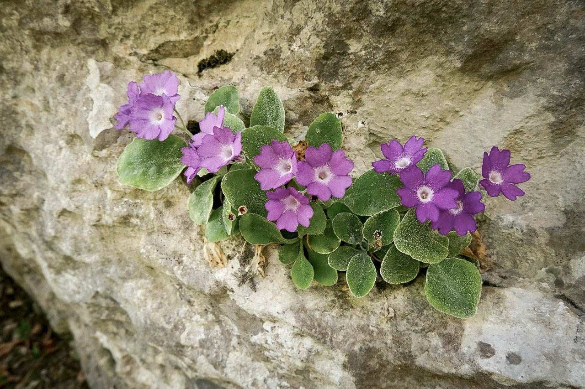

01 — Habitat
Dal castagneto alla roccia nuda
Le Orobie non sono una montagna sola, ma tante montagne sovrapposte. In poche ore di cammino si passa dai boschi di latifoglie e castagni della bassa valle, alle faggete e ai laricheti, fino ai pascoli alpini e alle pietraie sopra i duemila metri — ogni fascia con la sua aria, la sua luce, i suoi abitanti.
Camosci e stambecchi pascolano sui versanti più alti, le marmotte fischiano dalle pietraie, l'aquila reale disegna cerchi sopra le creste. Il Parco delle Orobie Bergamasche protegge gran parte di questo mosaico di ambienti: più si sale, più cambia tutto.

02 — Fioriture
Fiori che esistono solo qui
Tra le rocce calcaree del Monte Alben cresce la Primula albenensis, descritta dalla scienza proprio da queste montagne e che, per quanto si sa, non si trova in nessun altro angolo del pianeta. Ma non è l'unica: le Orobie ospitano diverse specie endemiche o rarissime, con forme e colori sorprendenti — dalla Linaria tonzigii, dai fiori violacei e dalla forma allungata tipica delle rupi più impervie, alla Cypripedium calceolus, la rara orchidea conosciuta come scarpetta della Madonna, che con il suo grande labello giallo e bruno sembra quasi disegnata apposta.
Ma è tutta la primavera-estate orobica a essere un calendario di fioriture: dalle genziane alle stelle alpine, dai rododendri ai gigli martagone. Ogni mese ha i suoi fiori, e ogni fiore ha la sua storia.
03 — Borghi
Paesi di pietra, storie da scoprire
Gromo, con le sue antiche fucine e le armi che da secoli portano il suo nome, è riconosciuto tra i Borghi più Belli d'Italia. Clusone custodisce uno degli orologi planetari più antichi d'Europa, ancora funzionante sulla facciata del suo Palazzo Comunale. Castione della Presolana, Valbondione, Lizzola, Bratto: ogni paese ha una piazza, una chiesa, un soprannome dialettale che racconta qualcosa.
Camminare tra le Orobie significa anche entrare in questi paesi, non solo attraversarli.

04 — Tradizioni
Alpeggi, formaggio e funghi nel cesto
In estate le mucche salgono ancora agli alpeggi, dove si produce il Formai de Mut, formaggio DOP nato proprio su questi pascoli. È un'economia di montagna antica, fatta di fatica e di stagioni, che si tocca con mano restando un po' con chi ci lavora ancora.
E poi i funghi: per molti qui è quasi una seconda vendemmia, un'uscita nel bosco che si ripete ogni autunno da generazioni, con regole non scritte su dove guardare e cosa lasciare crescere. Anche questo è patrimonio, anche se non si mette in vetrina.
05 — Eventi
Un calendario scandito dalle stagioni
A Valbondione, in alcune giornate d'estate, le Cascate del Serio — tra le più alte d'Europa — vengono aperte e per qualche ora regalano uno spettacolo che normalmente la diga trattiene. In autunno, quando le mucche scendono dagli alpeggi, molti paesi festeggiano il desalpeggio con sagre, mercatini e prodotti di malga.
Sagre del fungo, feste patronali, mercatini di Natale nei borghi più piccoli: vale sempre la pena chiedere cosa succede, prima di partire.